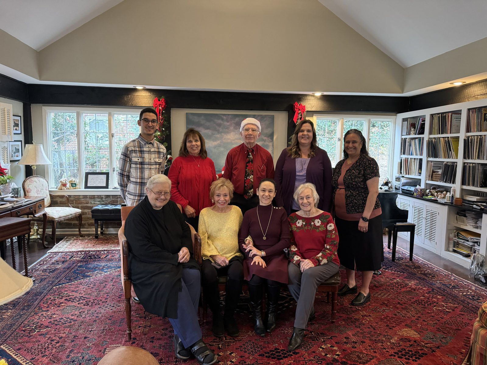

A community of local music teachers, university faculty, and music educators dedicated to the art of teaching, the standards of performance, and the next generation of musicians.
Our members include local music teachers, university faculty, and music educators dedicated to the art of teaching. Through monthly programs, masterclasses, and our annual student auditions, we work to elevate the music teaching profession and inspire the students entrusted to our care.
AMTA is a local affiliate of the Tennessee Music Teachers Association and the Music Teachers National Association — connecting our members and students to a community that spans the country.
For more than fifty years, AMTA members have gathered together — for monthly programs, holiday celebrations, and the everyday work of supporting one another in the profession of teaching music.
Behind every student audition, every masterclass, and every program on our calendar is a community of teachers who care deeply about their work and about each other.

Presentations, masterclasses, and our annual student auditions — a full season of music-making together.
Visiting Assistant Professor of Piano · ETSU, Johnson City
Each spring, students of AMTA member teachers gather at ETSU's Mathes Music Building for our annual auditions. Those who earn a Superior rating perform in the Honors Recital and advance to TMTA State Competitions.
Registration deadline: postmark by Sunday, March 15, 2027.
Audition Information